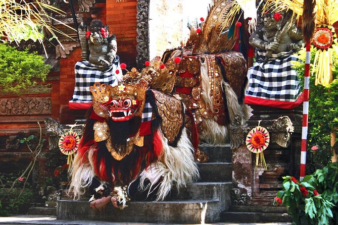

Gua Gajah

This is an ancient Ganesha temple in Bali.The statue is located in the cave which has beautiful carvings. The temple also has other statues such as a Shiva statue located just across the Ganesha statue in the cave.Many tourists go there until today.
Kecak Dance At Pantai Melasti
The Kecak dance is a mesmerizing Balinese fire performance combining Ramayana storytelling, rhythmic chanting, and drama. Performed by dozens of men chanting "cak-cak-cak" without instruments, it usually takes place at sunset, notably at Uluwatu Temple. The show highlights Prince Rama’s battle with Rawana for Shinta, often ending with a dramatic fire dance.
Barong Dance Kuta

The Barong dance in Kuta is a very famous dance of the Mahabharata epic. The Barong dance is a classic Balinese morality play depicting the eternal battle between good (Barong) and evil (Rangda), representing Dharma and Adharma. Featuring a lion-like creature, it is a key cultural performance often accompanied by Gamelan music and Keris